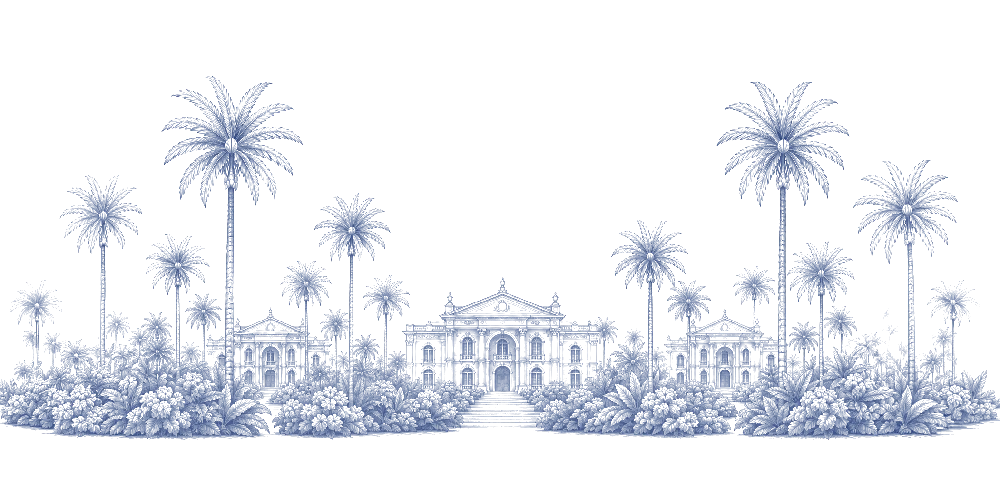

La Maison
Bryan Didon Pâtisserie est née en Guadeloupe, d’une conviction : une pâtisserie doit d’abord être bonne. Puis elle doit être belle, avec la même exigence.
Chaque création part d’un produit choisi avec soin, d’une recette retravaillée jusqu’à trouver le bon équilibre, et d’une finition sur laquelle je ne transige pas.

Mon histoire
Je suis né et j’ai grandi en Guadeloupe.
Depuis toujours, je voyage avec une habitude : pousser la porte des pâtisseries, partout où je vais. J’ai goûté, comparé, cherché ce qui fait qu’un gâteau reste en mémoire quand un autre s’oublie aussitôt. Presque à chaque fois, la réponse tenait au produit, et au soin du geste.
De ces années de recherche est née ma façon de faire : peu de choses, mais justes. Des recettes précises, des matières premières de qualité, et un visuel aussi soigné que le goût.
J’ai créé cette maison pour partager cette vision, ici, chez moi.
La carte
Mes cakes de voyage sont au cœur de la maison. Autour d’eux, la carte évolue au fil des saisons et des envies.
 La galette
La galette La vanille
La vanilleCommander
Toutes les créations sont réalisées à la commande et se retirent en click and collect. Il n’y a pas de livraison, pour que chaque pièce vous arrive telle qu’elle est sortie du laboratoire.